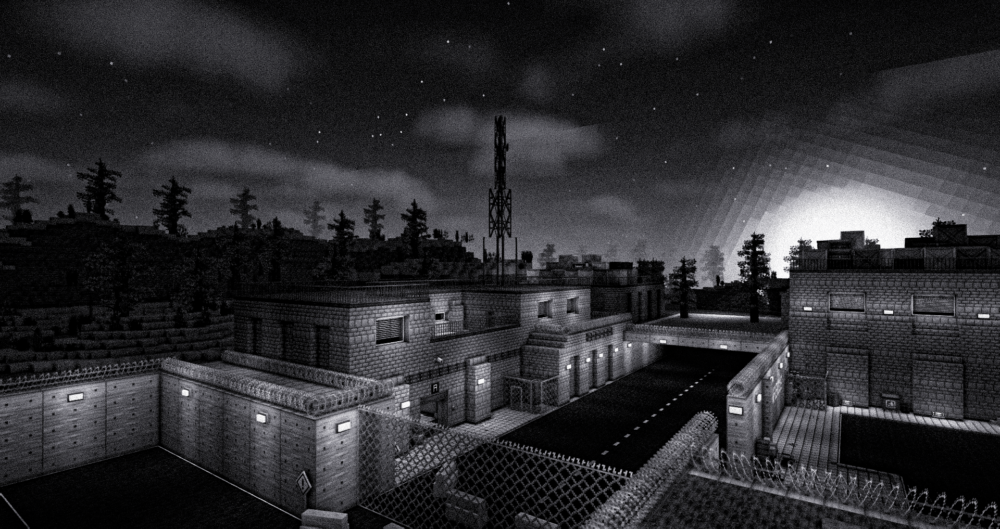
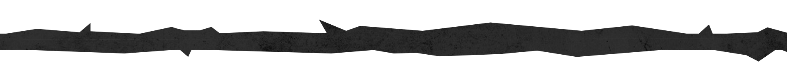
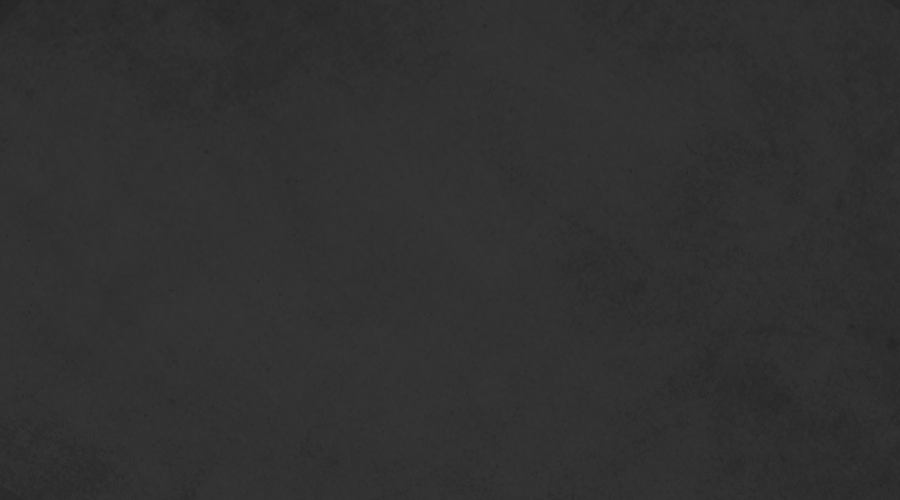
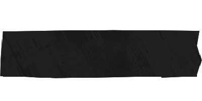
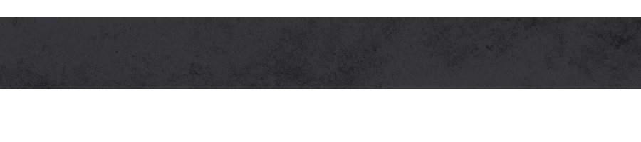
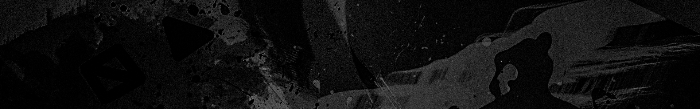

Minecraft Forge 1.12.2 сервер, асимметричный командный хоррор-мультиплеер, вдохновленный Laboratory от NZ.


Minecraft Forge 1.12.2 сервер, асимметричный командный хоррор-мультиплеер, вдохновленный Laboratory от NZ.


Установить Minecraft Forge 1.12.2 (Любой лаунчер)Установить сборкуЗайти на сервер с помощью внутриигрового меню
КАК ИГРАТЬ?
Скин устанавливать не обязательно,его можно установить уже на сервере
КОГДА СЕРВЕР РАБОТАЕТ?
На данный момент проходит этап открытого тестирования, сервер работает по запускам о которых мы оповещаем на дискорд сервере Расписания запусков пока нет...
Наши соц.сети
Теперь ознакомьтесь со следующими страницами!


